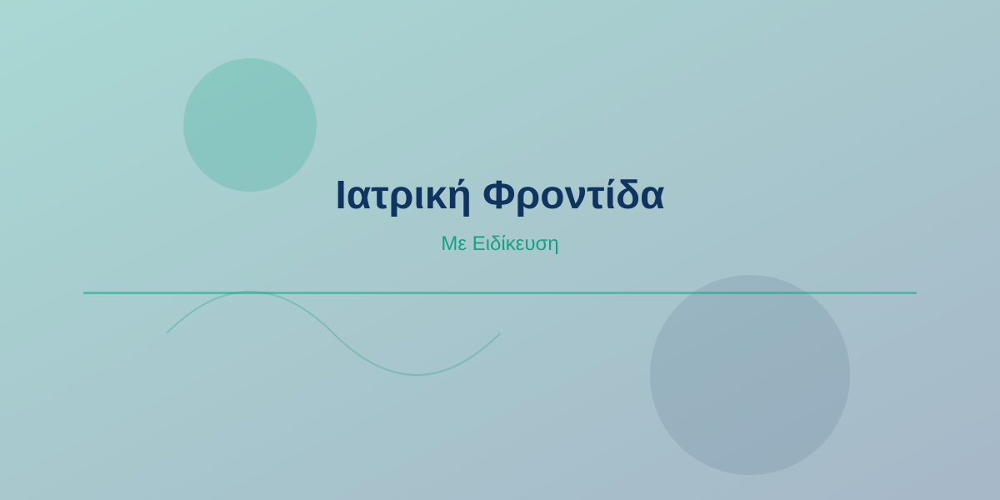
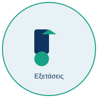

Ειδικός Γυναικολόγος - Μαιευτήρας
Με περισσότερα από 15 χρόνια εμπειρίας στη γυναικολογία, ο Dr. Kourletakis Stylianos είναι αφοσιωμένος στην παροχή ολιστικής φροντίδας στις γυναίκες. Ολοκλήρωσε τις σπουδές του στο Πανεπιστήμιο Αθηνών και εξειδικεύθηκε σε σύγχρονες διαγνωστικές και θεραπευτικές τεχνικές.
Ειδικότητες:

Πλήρης γυναικολογικός έλεγχος για την πρόληψη και διάγνωση διαφόρων καταστάσεων υγείας.
Υψηλής ανάλυσης υπερηχογραφίες με τη χρήση της πιο σύγχρονης τεχνολογίας για ακριβή διάγνωση.
Εξειδικευμένη διαγνωστική διαδικασία για την αξιολόγηση της υγείας του τραχήλου της μήτρας.
Τακτικός έλεγχος για την πρόληψη και έγκαιρη ανίχνευση του καρκίνου του τραχήλου.
Οδός Ιατρική 123
151 24, Αθήνα
Ελλάδα
Δευτέρα - Παρασκευή: 09:00 - 17:00
Σάββατο: 10:00 - 13:00
Κυριακή: Κλειστά